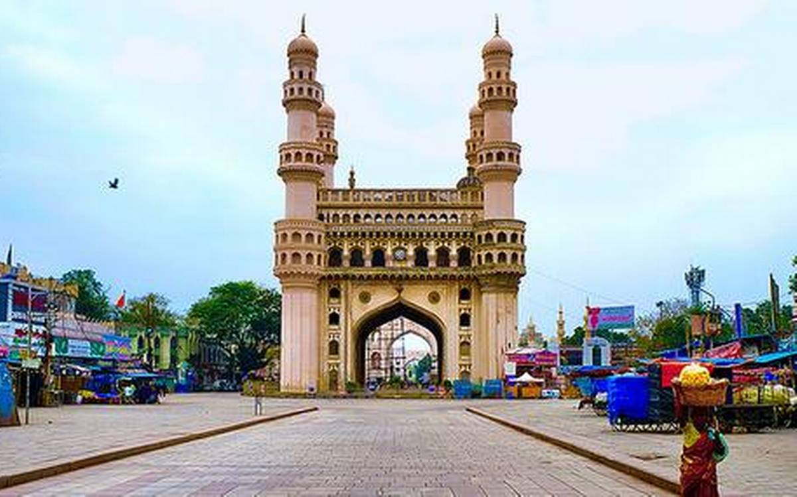
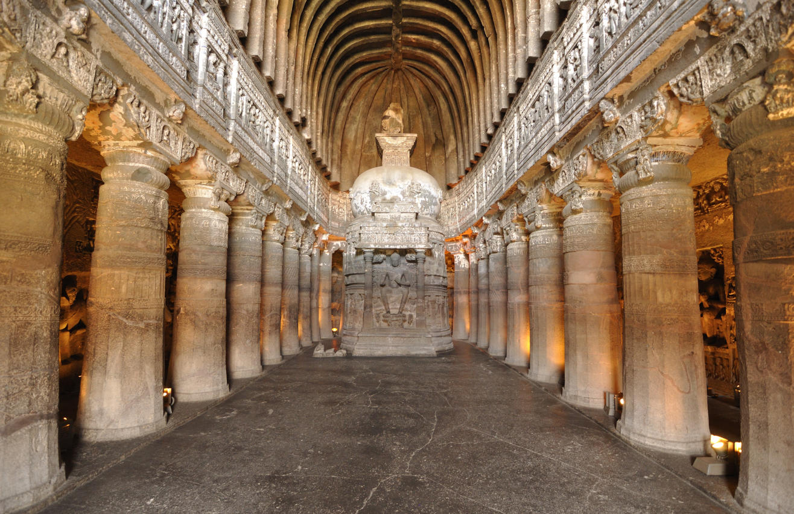

Monuments of India
Qutb Minar
The Qutub Minar is a towering 73 meter high tower built by Qutub-ud-Din Aibak in 1193. The tower was built to celebrate Muslim dominance in Delhi after the defeat of Delhi's last Hindu ruler.Qutub-ud-Din Aibak of Slave Dynasty laid the foundation of Minar in A.D. 1199 for the use of mu'azzin (crier) to give calls for prayer and raised the first storey, to which were added three more storeys by his successor and son-in-law, Shams-ud-Din Itutmish (A.D. 1211-36).

Taj Mahal
It was built by Mughal Emperor Shah Jahan in memory of his wife Mumtaz Mahal with construction starting in 1632 AD and completed in 1648 AD, with the mosque, the guest house and the main gateway on the south, the outer courtyard and its cloisters were added subsequently and completed in 1653 AD.

India Gate
It was built to commemorate the Undivided British Army (also known as British India Army) soldiers who laid down their lives during the First World War and the Third Anglo-Afghan War of 1919. This imposing structure is one of the largest war memorials in the country with the names of over 13,000 soldiers written on it.

Charminar
The Charminar is a massive arch built by Mohammed Quli Qutab Shah, in 1591 to commemorate the end of the plague in the city. The symbol of the city, the Charminar, is an impressive square monument with four minarets. The arch is illuminated daily in the evening, an unforgettable sight indeed.The Charminar is a monument and mosque in Hyderabad, India. The structure was built in 1591 AD. It is the most famous building of Hyderabad and also one of the most famous buildings in India.

Ajanta Caves
A set of 29 caves, Ajanta is among the finest examples of some of the earliest Buddhist architecture, cave paintings and sculptures. These caves comprise Chaitya halls or shrines, dedicated to Lord Buddha and Viharas or monasteries, used by Buddhist monks for meditation and the study of Buddhist teachings.Ajanta Caves, Buddhist rock-cut cave temples and monasteries, located near Ajanta village, north-central Maharashtra state, western India, that are celebrated for their wall paintings.
